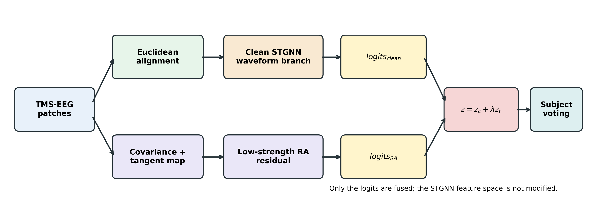
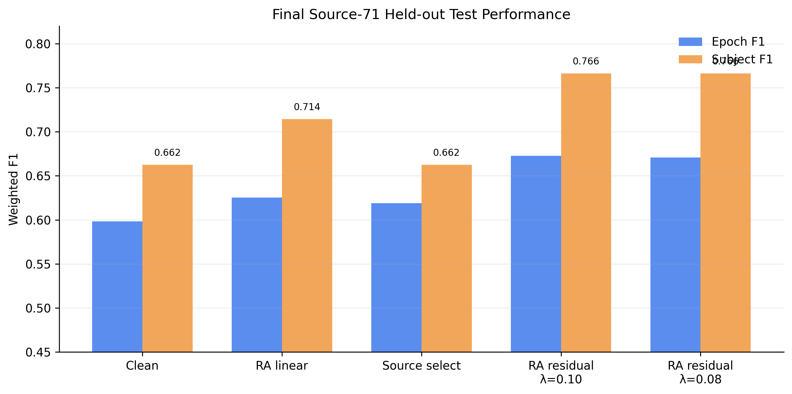

Subject-exclusive protocol
Every epoch from one subject remains in exactly one partition. Model selection, thresholds, residual strength, and gating rules use training and validation subjects only.
Open research implementation
A subject-exclusive pipeline that keeps waveform learning clean and admits auxiliary evidence only at the decision level when validation data support it.

Design
Every epoch from one subject remains in exactly one partition. Model selection, thresholds, residual strength, and gating rules use training and validation subjects only.
A spatio-temporal graph network operates on aligned waveform patches without subject-identity normalization or record-level clinical inputs.
Covariance and non-diagnostic baseline evidence remain separate from waveform features and can alter a decision only through a validation-selected policy.
Internal evidence
The fixed split explains decision changes; nested evaluation tests whether those changes persist across partitions. Neither is external validation.

The fixed-split residual improvement had a bootstrap interval crossing zero and did not reproduce consistently in nested evaluation. The clean waveform model remains the default; auxiliary evidence is exploratory.
Public release
python -m pip install -e ".[dev]"
tms-eeg make-synthetic --output data/synthetic_demo.npz --subjects 30
bash scripts/run_smoke_test.sh